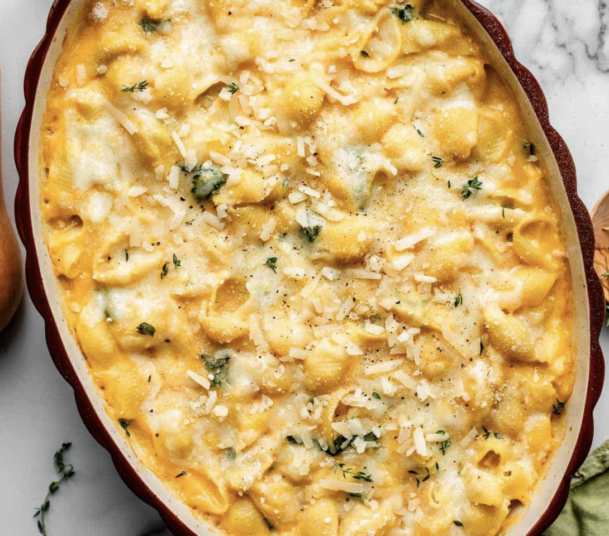

Butternut Squash Mac n Cheese
From Sally's Baking Addiction
Click Here for Full Recipe!
Ingredients:
instructions:
- Add squash, broth, milk, and garlic in a pan over medium-high heat
- Bring to a boil, then reduce heat to medium-low and simmer for 20 minutes
- Preheat oven to 375°F
- Boil water for the pasta, cook the pasta until al dante, then add the kale and cook for another 1-2 minutes
- Drain the pasta and kale
- Put squash mixture in a blender, add yogurt, salt, pepper, and nutmeg, and blend until combined
- Stir cheese into sauce
- Combine sauce with pasta and kale
- Pour into a 9x13 inch pan and top with breadcrumbs and more cheese
- Cover with tinfoil and cook for 20 minutes, then remove tinfoil and cook for another 5 minutes